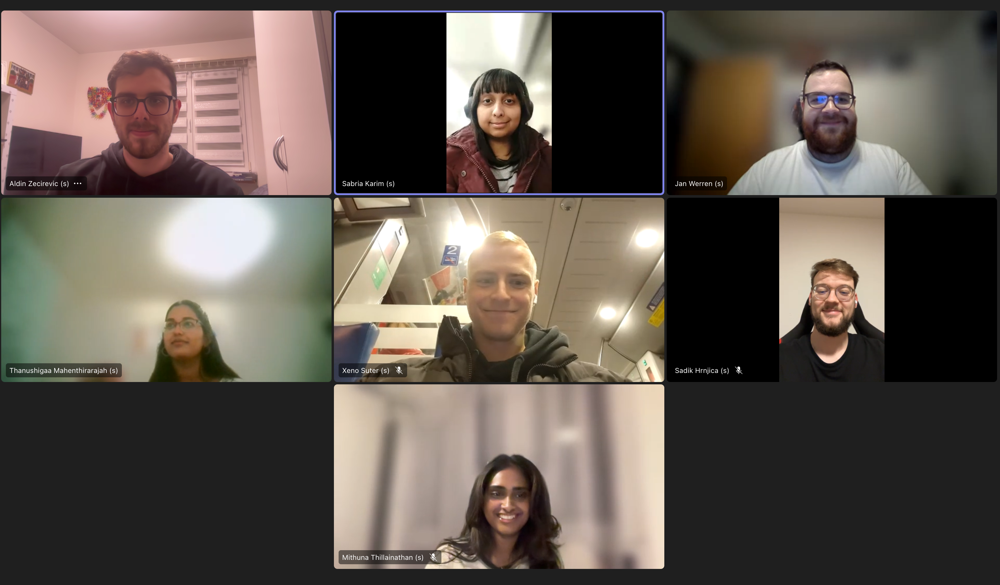

Module Administration
Streamline academic management with a user-friendly and stable solution designed for deans and students to improve the overall academic experience. This project enables the efficient creation and management of modules, study programs, study courses, groups, and semesters, while providing tools for creating study regulations and clear visualizations of module overviews.
Initial Situation/Problem statement
The Computer Science degree program at FHNW was previously managed using a variety of disconnected tools, such as Excel tables, Word documents, and Visio/Draw.io diagrams. These tools were used to manually create and maintain module orders, program regulations, module tables, and various PDF files. This fragmented approach resulted in redundant data across multiple platforms, making maintenance time-consuming and prone to errors. Module coordinators, program directors, students, and university administration all relied on this complex, disjointed system, making it nearly impossible to ensure consistent and transparent information flow. Additionally, isolated solutions contained redundant information, further complicating data management and communication. Our solution has streamlined these processes, eliminated redundancies, and ensured accurate, consistent data flow across all stakeholders.
Project Goal
The Module Administration project aimed to streamline the management of academic components, improving communication and transparency while reducing the risk of errors. It provided a centralized platform for quick access to data, allowing for easy updates and automated preparation of information for stakeholders like students and staff. The solution ensures fast, error-free access to relevant data and is available online, meeting the needs of both deans and students.
Deans Pages
General Overview
Overview of Study Program
Construction of Study Program
Overview of all Semesters
Construction of Semester
List of Modules
Module to Group Management
Student Pages
Overview of Modules
Dependency Graph of Module
Developed Solution and its benefit
The Module Administration project successfully delivered an efficient, web-based solution that centralizes the management of academic components, such as modules, study programs, courses, groups, and semesters. By replacing disconnected tools like Excel, Word documents, and PDFs, the solution consolidates all academic data into one unified platform, reducing errors and administrative overhead.
Key Features of the Solution:
- Automated Study Regulation Generation: Streamlines the creation of study regulations with real-time updates, ensuring consistency and accuracy across all documents.
- Intuitive Semester Planning Tool: Facilitates efficient management of semester schedules and resources, enabling deans and administrators to plan effectively.
- Clear Module Overviews: Provides students with easy-to-understand visualizations of module prerequisites and dependencies, allowing for more informed decision-making and better study planning.
- Centralized Data Management: Replaces fragmented tools like Excel sheets and PDFs, consolidating all academic data in one platform, improving efficiency, and reducing the risk of errors.
- Identification of Broken Links: Automatically detects broken module description pages, listing them for administrators to quickly address and ensure accurate content.
This solution has streamlined academic management, saved time, and reduced the risk of human error, while providing real-time updates for all stakeholders—deans, administrators, and students. Through usability testing and feedback integration, the solution was refined to meet the diverse needs of all users, ensuring a seamless experience.
The project has successfully achieved its goal of creating a more efficient, transparent, and less error-prone academic management system, making academic planning simpler and more accessible for everyone involved.
Testemonial
«It was an enjoyable collaboration. The team familiarized itself intensively with the requirements and focused on the added value of this project for the 2 main end user groups. The team members dealt with the changing requirements in a very positive and goal-oriented manner. In the progress of the project, I noticed significant improvements in the process methodology and technical skills.»
Stefan Vetter
Key terms
- UI/UX ToolFigma
- Programming languagesJava, Angular, Linux Bash Shell
- Frontend LibraryAngular
- Backend LibrarySpring Boot
- Runtime EnvironmentDocker
- Server DistributionUbuntu 22.04
- Database TechnologyMariaDB
Customer
Studiengang Informatik at School of Engineering FHNW
Bahnhofstrasse 6
5210 Windisch
www.fhnw.ch
Prof. Dr. Christoph Denzler
Co-Leiter SG Informatik
University of Applied Sciences and Arts Northwestern Switzerland
School of Engineering
Bahnhofstrasse 6
5210 Windisch
Stefan Vetter
Dozent SG I & Stv. Co-Studiengangleiter Informatik
University of Applied Sciences and Arts Northwestern Switzerland
School of Engineering
Bahnhofstrasse 6
5210 Windisch
Team

Team
Aldin Zecirevic, Sabria Karim, Jan Werren, Thanushigaa Mahenthirarajah, Xeno Suter, Sadik Hrnjica, Mithuna Thillainathan
Coach
Barbara Dravec